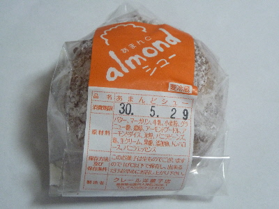
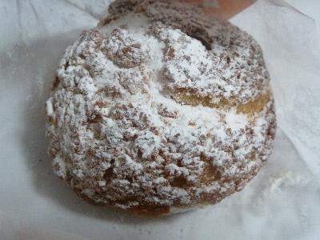
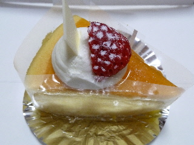
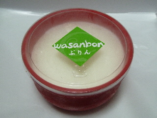
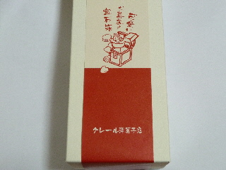
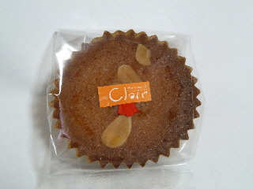
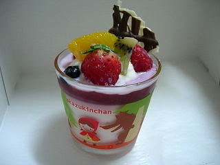
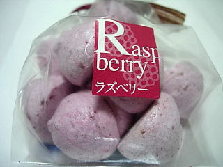
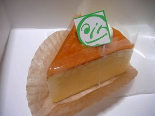
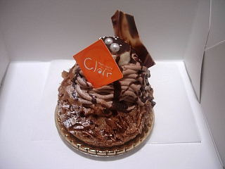

クレールのあまんどシュー
2018/05/27
ちょっと小さ目のシュークリームです。

中はクリームたっぷりです。

生クリームもカスダードクリームもバニラの味もしました。
小さいけど盛りだくさんな味でした。
島根県出雲市大津町3906-1
2018/05/27
ちょっと小さ目のシュークリームです。

中はクリームたっぷりです。

生クリームもカスダードクリームもバニラの味もしました。
小さいけど盛りだくさんな味でした。
2012/04/02
クレールでお得なケーキボックスを買いました。

私は箱の中でこれが一番美味しそうに見えました。
チーズケーキに苺とクリームが乗っててちょっと豪華でした。
2011/06/09
出雲市大津町にある洋菓子屋さんのプリンを食べました。

白いのは、プリンの上にクリームが乗っているからです。クリームの下には、茶色い和三盆味のプリンがあります。
私はこのプリンが好きで、食べたくなったので買いに行きました。
クリームの甘さもいいし、和三盆とプリンの組み合わせもコクがあっていいですね。
王道な味ではないですが、たまに食べたくなります。
2011/01/01
紅白でめでたそうな箱に入ったお菓子です。お正月にいいですね。

中には焼き菓子が色々入っていました。

バター少な目で、軽くて食べやすかったです。
2009/11/27
ケーキ屋さんのカップってどうしてます？
私はちょっと立派な入れ物だと捨てにくく取って置くんですが、使う事がなく、邪魔になって捨てています。
なので、「入れ物が欲しくないからそのケーキは買いたくない」って思う事がよくあります。
でもコレは可愛くていいですね。

何かに使えそうです。
2009/7/27
出雲大社の軽4朝市で買いました。

色んな味のメレンゲの焼き菓子が販売していましたが、見た目が派手なラズベリー味を選んで買いました。
ラズベリー味が濃くて美味しかったです。また軽4朝市に行く事があったら今度は違う味の商品を買ってみようとお思いました。
2008/9/6
マスカルポーネなのでチーズ味はあっさりですね。

上から下まで、全部がしっとりと柔らかくて、いい食感のチーズケーキでした。
上に乗ってる柑橘系のソースとの相性も良く、いい味でした。
こっちはモンブランっぽいですけど、チョコバナナって商品です。

クリームたっぷりで、大きさもあるので、ガッツリいきたいときにはいい商品ですね。
9/28はイベントがあるみたいです。お店に書いてありました。
2007/1/4
シューロールっていうと、ロールケーキの外側がシュー生地っぽい商品をイメージするんですが、ここの商品は違っていました。
ロールケーキのクリームの部分に、クリームとシュー生地が入ってました。シュー生地の部分に甘さがプラスしてあったので、クリームにはない濃い甘さが所々にあり、味にメリハリがあって良かったです。
しっとりしてて質量のあるタイプのロールケーキで、個人的には好きなタイプです。また味違いのタイプが出たら買いたいですね。
今回カットしてあるタイプのロールケーキを買ったんですが、お試しに気軽に買えていいですよね。新商品のロールケーキは他のお店もカットで売って欲しいです。
2007/1/3
今年最初のスイーツはクレールのブルーベリープリンでした。
プリンって名前ですけど、「これプリン？」って感じです。
和三盆プリンと同じでクリームたっぷりの豪華なプリンですが、こっちはマイルドな味に仕上げてあります。クリームと、ナチュラルな感じで甘さ控えめのプルーベリーが軽くて食べやすいですね。
濃い味の和三盆プリンと対象的な感じがしました。
今日は他にチーズケーキも食べたんですが、こっちはスッパめのブルーベリー味がスポンジにしっかり付いてて変わった感じの味でした。色んなタイプの味があるお店ですね。
2006/12/17
オープンした時に食べて、「美味しいっ！」て思ったプリンをまた食べました。
和三盆プリンってことで、甘さに深みがありますね。プリンの上にはクリームがたっぷり乗っているので、クリームと一緒にマイルドな甘さを味わってもいいし、プリンだけでコクのある甘さを味わってもいい商品です。
王道なプリンじゃないですけど、お勧めです。
一緒にシュークリームも食べたんですが、出来たてだったので、オープン時よりも美味しかったです。
クッキーシューにクリームがたっぷり入っているので、綺麗に食べるのにはテクニックを必要としました。
2006/11/5
出雲市大津町3906-1に今日オープンしたケーキ屋さん「クレール洋菓子店」に行って来ました。
ちょっと見た目が派手派手のお店で「大丈夫？」って不安な気もしましたが、「ラ・セゾン」と「プティパトラン」からお祝いのお花が置いてあったので、きっと同じ系列のお店で、似た感じの味かもしれませんね。
11/5,6はオープン記念で、2000円相当の詰め合わせが1500円で販売していてお得なんですけど、それしか販売していないので、どんなケーキが売っているのかは不明でした。
一応詰め合わせの中にもケーキは入っていたんですが、ちょっと小さくて寂しい感じだったので、味見をした気分にはなれませんでした。
普通に営業している時にまた行きたいです。
ちなみに箱のなかで一番美味しかったのは、クリームがたっぷり乗った、ちょっと大きめの、なんて名前か解からないプリンでした。